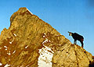
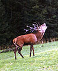
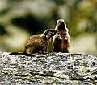
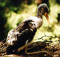

|
||||||||||||||||||||||||||
|
|
||||||||||||||||||||||||||
| Zwierzęta w Tatrach | ||||||||||||||||||||||||||
|
 Na obszarze Tatr żyje 8 gatunków płazów, 3 gatunki gadów, 115 gatunków ptaków, 42 gatunki ssaków. Większość z nich występuje także w innych łańcuchach górskich Europy bądź na obszarach nizinnych; niektóre zaś są endemitami, które żyją jedynie w Tatarch. Należą do nich: kozica (Rupricapra rupricapra tatrica), nornik śnieżny (Microtus nivalis) i ryjówka górska (Sorex alpinus). Obszary występowawnia poszczególnych gatunków ograniczone są przez występowanie na danym terenie potrzebnych im do życia czynników. Należą do nich: pokarm i spokój. Ten drugi jest zakłócany przez obecność i działalność człowieka. Jedynym sposobem, by go zapewnić, jest ograniczanie działalności ludzi na obszarze chronionym. Występowanie pokarmu związane jest z piętrowym układem roślinności. |
||||||||||||||||||||||||||
| Piętro lasu i kosodrzewiny | ||||||||||||||||||||||||||
|
Lasy tatrzańskie i położoną nad nim strefę kosówki zamieszkują liczne ssaki roślinożerne: z gryzoni smużka (Sicista betulina), zwierzęta kopytne: jeleń, sarna, dzik, z łasicowatych borsuk, a także wielkie drapieżne: ryś, wilk, niedźwiedź.
Ptaki leśne to:
|
||||||||||||||||||||||||||
| Piętro hal i turni | ||||||||||||||||||||||||||
|

W piętrze łąk alpejskich i wyżej spotykane ptaki to:
płochacz halny (Prunella collaris), świergotek drzewny
(Anthus trivialis), siwerniak (anthus spinoletta), oraz rzadki
i chroniony pomurnik (Tichodroma muraria).
Świstak (Marmota marmota latirostius), charakterystyczny górski gryzoń,
także występuje w piętrze hal. |
||||||||||||||||||||||||||
| Potoki i stawy | ||||||||||||||||||||||||||
|

Nad stumieniami, na kamieniach w dolinach potoków spotykane są ptaki:
pluszcz (Cinclus cinclus), pliszka siwa (Motacilla alba),
pliszka górska (Motacilla cirenea), bocian czarny (Ciconia nigra),
bocian biały (Ciconia ciconia). Rzadkim ssakiem, żyjącym w pobliżu wód, jest wydra (Lutra lutra). W miejscach wilgotnych, szczególnie w piętrze lasu, bytują też płazy: kumak górski (Bombina variegata), salamandra plamista (Salamandra salamandra), traszka karpacka (Triturus montandoni).
|
||||||||||||||||||||||||||
|
Fotografie na tej stronie zamieszczone zostały
za zgodą i dzięki uprzejmości autorów oficjalnych stron
Tatrzańskiego Parku Narodowego (TANAP)
|
||||||||||||||||||||||||||
| Copyright © www.xemantic.com 2003 | ||||||||||||||||||||||||||